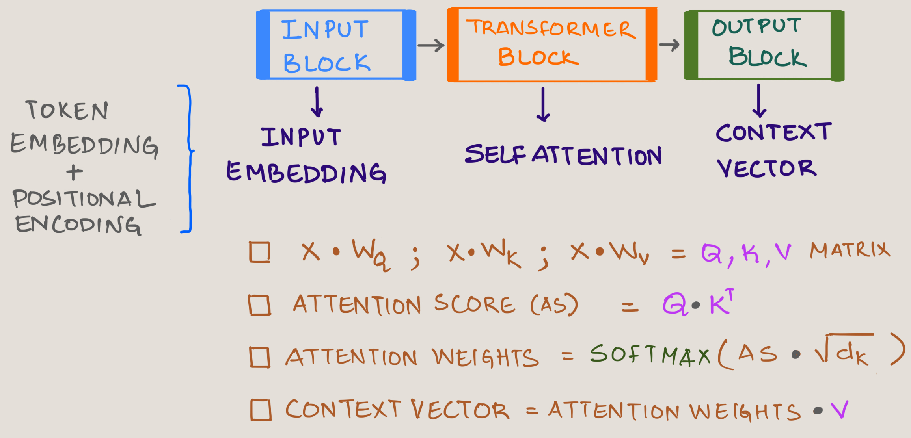
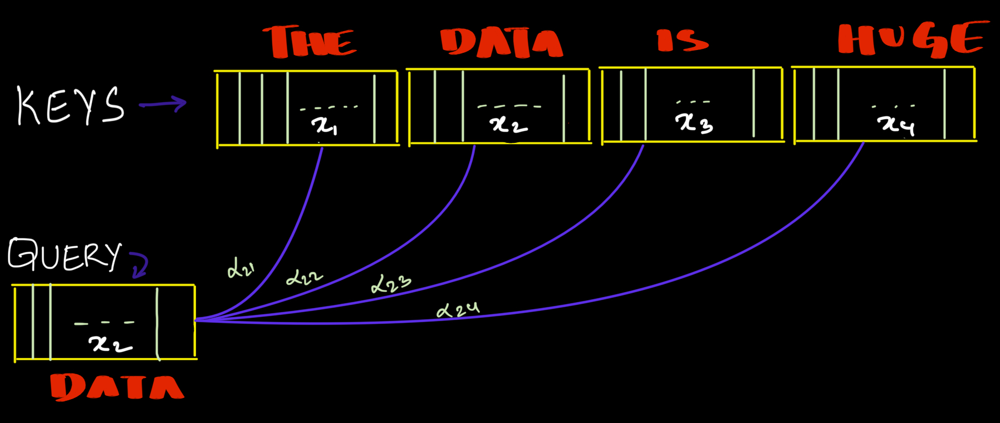
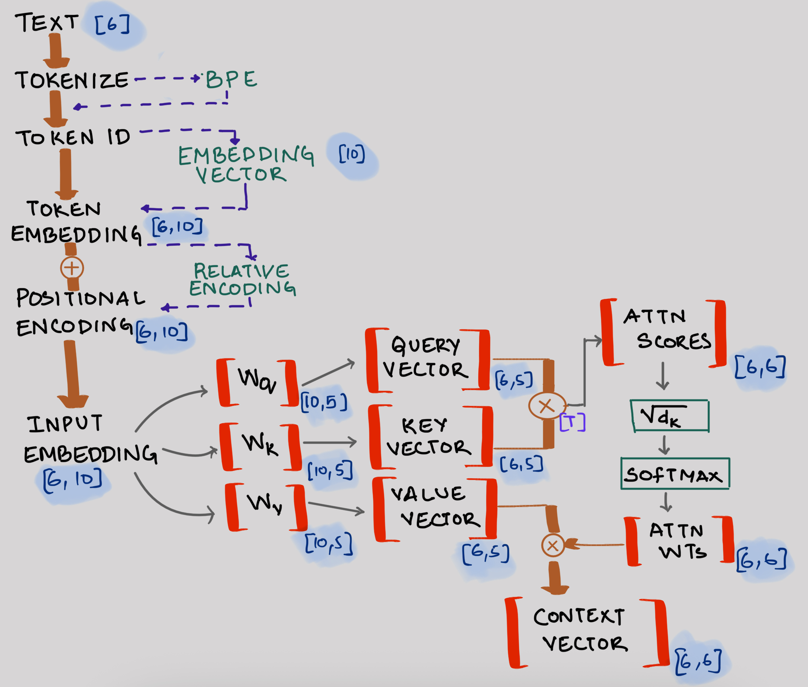
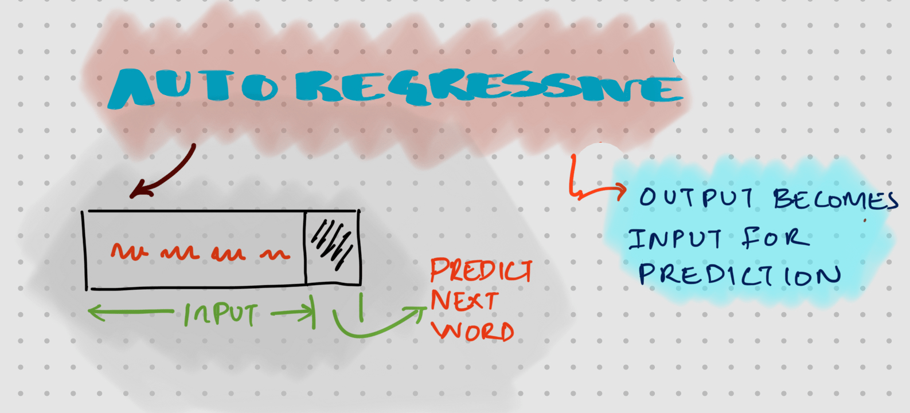

Introduction
In my previous blog post, I introduced Deepseek LLM’s innovative parallel thread execution (PTX) mechanism and how they use it for GPU optimization. Today, we’ll cover another foundational topic - Multihead Attention (MHA) before diving into Deepseek’s second groundbreaking innovation known as Multihead Latent Attention (MHLA).
Multihead Latent Attention Roadmap
Logical progression to understand MHLA is as shown in the image below.

The attention mechanism was introduced to solve fundamental limitations in the Encoder-Decoder architecture. Let’s examine why this was necessary.
Encoder-Decoder
Before attention mechanisms, sequence processing relied on RNN (Recurrent Neural Network) and LSTM (Long Short Term Memory) networks which had significant limitations:
- The encoder processes input token through LSTM/RNN cells, with the final hidden state (h3) passed to the decoder
- All information from previous hidden states (h0, h1, h2) is compressed into a single vector called the context vector
- This means that to generate outputs, the decoder only has access to this final hidden state
- As a result, contextual information is lost when processing longer sequences

Drawback of Encoder-Decoder
The traditional encoder-decoder suffered from several key limitations:
Information Bottleneck: The entire input sequence had to be compressed into a single fixed-length context vector, regardless of the input sequence length.
Long Range Dependencies: As sequence length increased, the model struggled to maintain relationships between positions.
Vanishing Information: Information from the beginning of long sequences would “fade” by the time it reached the decoder.
These limitations were particularly problematic for machine translation tasks where sentences in different languages often have different structures and word orders.
Attention
The concept of Attention was introduced to solve the above challenges in a landmark paper Neural Machine Translation by Jointly Learning to Align and Translate by Bahdanau, Cho, and Bengio in 2014. It revolutionized the field of sequence processing by allowing neural networks to focus on specific parts of the input when generating outputs. You can find the paper here
Decoder (s1) has now access to every hidden state and also the context of every hidden state in the encoder stage.

Another way of imagining the Attention Mechanism is as below. The attention block in between has the context information of inputs and much more richer containing semantic meaning.
See the attention weights giving the importance for each hidden state in the below image
Key Improvement: The decoder (s1) now has access to every hidden state from the encoder stage, giving it context from the entire input sequence. The stronger colored bands in this visualization represent higher attention weights, showing which input tokens the model is focusing on when generating each output.

The Bahdanau attention mechanism allowed decoder to “look back” at the entire sequence of encoder hidden states when generating each output token. Rather than relying solely on a fixed context vector, the decoder could dynamically focus on relevant parts of the input sequence.
Self Attention
To understand how everything fits together, let’s revisit the transformer architecture:

As a block schematic, self-attention will look something like this:

Where:
$ X : $ Input embedding (Token Embedding + Positional Encoding)
$ W_Q : $ Trainable Query Matrix
$ W_K : $ Trainable Key Matrix
$ W_V : $ Trainable Value Matrix
$ (d_k): $ Square Root of keys dimensions
Example: See how the word “Data” interacts with surrounding words. Each word calculates attention scores with every other word in the sequence:

The process works something like this:

Attention Score will then be calculated as :
$ x_2 x_1 $
$ x_2 x_2 $
$ x_2 x_3 $
$ x_2 x_4 $
Attention Weights will be :
$ Attention Weight = $ softmax \(([\alpha_{21},\alpha_{22},\alpha_{23},\alpha_{24}])\) = \(([w_{21},w_{22},w_{23},w_{24}])\)
Finally Context Vector for "Data" will then be :
$ Context Vector_{Data} = $ $ (w_{21} v_1) + $ $ (w_{22} v_2) + $ $ (w_{23} v_3) + $ $ (w_{24} v_4) $
Where: \(v_1 ,v_1, v_1, v_1\) are Value Matrix
Self Attention - Dimensions
Note: Understanding tensors (multi-dimensional arrays) and matrix multiplication is essential here. With practice, these operations become intuitive.
Here’s how input text is processed through the self-attention blocks, including sample matrix dimensions:
- The numbers in brackets represent dimensions (e.g., \(W_Q\) has dimensions \([10, 5]\))
- This example processes 6 words (i.e. 6 tokens)
- The context vector output feeds into the logits layer to calculate probabilities for the next word
- While we show just one transformer block here, modern architectures stack multiple blocks

Causal Attention
Causal attention which is also known as Masked Attention is a variant used in language models that ensures tokens can only attend to themselves and previous tokens in the sequence. This maintains the autoregressive property needed for text generation, where each token is predicted based only on previously observed tokens.
Autoregression: The output for each word goes back as an input to predict the next word. 
Let’s take a simpler example: in the sentence THE DATA IS HUGE, when predicting the word IS, causal attention only needs to calculate attention scores for THE and DATA (previous and current tokens). This significantly reduces computation compared to full self attention, which would unnecessarily calculate scores for future tokens like HUGE.
Efficiency Advantage
One significant benefit of causal attention is computational efficiency. Since each token only needs to calculate attention weights for itself and preceding tokens but not future tokens, the number of calculations decreases substantially:
- For the first token: only 1 attention weight calculation
- For the second token: 2 attention weight calculations
- For the third token: 3 attention weight calculations
- And so on…
In causal attention, we apply a mask to the attention scores matrix that sets all future position scores to negative infinity before the softmax operation

Multihead Attention
But why would you need Multihead attention? Have a look at this sentence - The programmer compiled the code, but it still had bugs in it.
In this sentence, we have two instances of “it”. First “it” refers to “complation of the code” and second “it” refers “bug in the code”. If we get the token ids then it will look something like this.
Both instances of ‘it’ have identical token IDs, but they refer to different concepts in the sentence. This shows why we need multiple perspectives of the input sequence, as a single attention mechanism might not capture these different contextual meanings.
[10] [23] [3] [34] [50] [89] [14] [77] [69] [8] [15] [9] [77] [.]
That means the context is completly lost since it will have only one perspective. What if we somehow capture different perspective of a given input sequence?
Instead of performing a single attention operation, multihead attention performs multiple attention in parallel. Each “head” learns different relationship or patterns or perspective:
Method
Take a look at this image. Here the input dimension is split into two heads which captures two perspective of a sentence.

- Split the embedding dimension into multiple heads
- Each head performs its own Query, Key, Value projections
- Calculate attention independently in each head
- Concatenate results and project back to original dimension
This allows the model to jointly attend to information from different representation subspaces, capturing different aspects of the input sequence.
Mathematically :-
\(\text{MultiHead}(Q, K, V) = \text{Concat}(\text{head}_1, ..., \text{head}_h) \circ W^O\)
Where each head is:
\(\text{head}_i = \text{Attention}(QW^Q_i, KW^K_i, VW^V_i)\)

Code
Let us see some code we discussed so far.
Assume that the input $ x $ is the input embedding which is tokenized and positional encoding is applied
Output of $ x = $ [1, 3, 6] which is read as follows: 3 rows , 6 columns and batch size is 1.
# decode d_out and number of heads
# head_dimn = d_out/n_heads
d_out = 6
num_heads = 2
head_dimn = int(d_out/num_heads)
print("output dimn is:", d_out)
print("number of heads is:", num_heads)
print("head dimn is:", head_dimn)
x = torch.tensor([[[0.1, 0.2, 0.3, 0.4, 0.5, 0.6],
[0.7, 0.8, 0.9, 0.10, 0.11, 0.12],
[0.13, 0.14, 0.15, 0.16, 0.17, 0.18]]])
batch, tokenid, d_in = x.shapeTrainable matrix $ W_q, W_k, W_v $
W_Query = torch.nn.Linear(d_in, d_out, bias=False)
W_Key = torch.nn.Linear(d_in, d_out, bias=False)
W_Value = torch.nn.Linear(d_in, d_out, bias=False)
# get the key , query and values matrix
keys = W_Key(x)
query = W_Query(x)
values = W_Value(x)
# 3 rows and 6 columns having 1 batch
print(query.shape)
print(keys.shape)
print(values.shape)
# convert [batch, tokens, d_out] to [batch, token, num_heads, head_dimn]
# 3 Dimensional [1,3,6] -> 4 Dimensional [1,3,2,3] i.e. 1 batch of 2x3 having 3 such sets
keys = keys.view(batch, tokenid, num_heads, head_dimn)
query = query.view(batch, tokenid, num_heads, head_dimn)
values = values.view(batch, tokenid, num_heads, head_dimn)
print(keys.shape, query.shape, values.shape)
keys
att_score = query @ keys.transpose(2,3) # this results in Q1 x K1(transpose) & Q2 x K2(transpose)
print(att_score.shape)
# this is attention score of head1 and head 2 with tokenid in columns and tokenids in rows i.e. tokenids x tokenids
att_score
# To get attention weights we need to do the following
# scaling by sqrt(key dimns) + softmax + causal attention + dropouts
# first apply mask on the upper triangle of the matrix on tokenids which is 3x3
mask = torch.triu(torch.ones(3,3), diagonal=1).bool()
mask
# we need to now change the mask to -inf so when we apply softmax, it will be turn to zeros
att_score.masked_fill_( mask, float('-inf'))
sqrt_d = keys.shape[-1]**0.5
print("square root of keys is : ", sqrt_d)
# apply softmax on the last dimension which is length of the tokenids [batch, num_heads, tokenids, tokenids]
attn_weights = torch.softmax(att_score/sqrt_d, dim=-1)
attn_weights
# context vector is attn_weights * value matrix
values.shape, values
context_vector = (attn_weights @ values)
context_vector.shape, context_vector
# if you want projection (optional)
context_vec = torch.nn.Module.out_proj Conclusion
Now that we’ve established a solid understanding of conventional attention mechanisms, in the next post we’ll explore Deepseek’s innovative Multihead Latent Attention (MHLA). This technique represents a significant advancement that improves both computational efficiency and model performance by operating in a more compact latent space. MHLA reduces computational complexity while maintaining or even enhancing the model’s ability to capture relationships between tokens, particularly for long sequences. Stay tuned to learn how this optimization technique can be applied to your own language models!